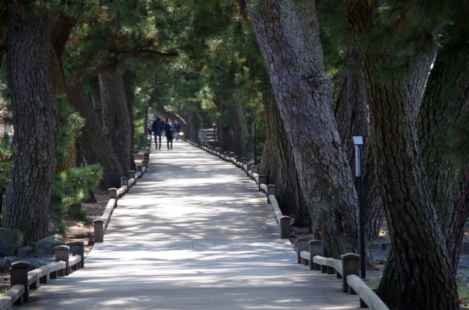
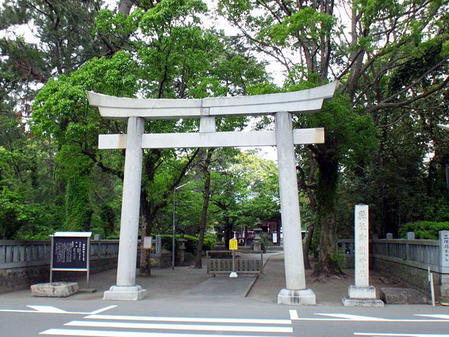
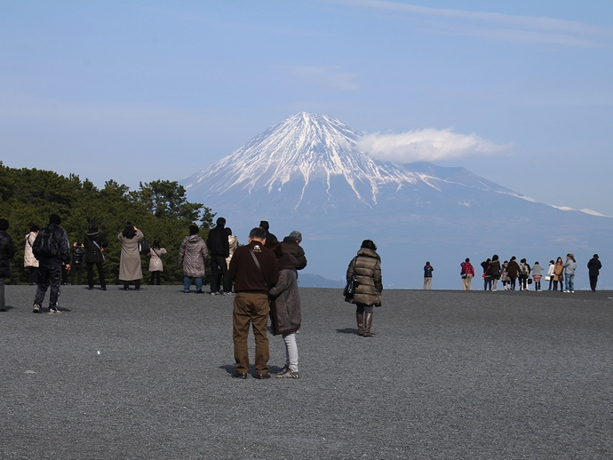
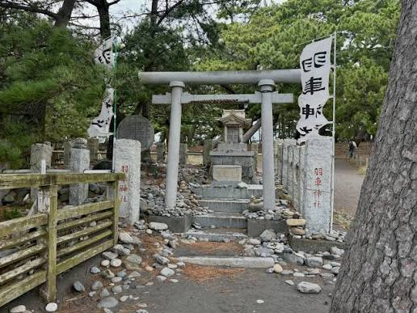

頭上を覆い隠すほど豊かな緑の松の木々と、美しく整備されたまっすぐな遊歩道。木の間から差し込む太陽の光が地面に優しい影の模様を描き、「わあ、空気が美味しい！」と思わず深呼吸したくなるマイナスイオンたっぷりの空間です。

静寂に包まれた緑の木々の中に凛と立つ、歴史ある立派な石の鳥居。この鳥居の先には、神様が通る道とされる神聖な松並木と「御穂神社」が続いています。実際に足を運び、心を込めて祈りを捧げると、心身がすーっと浄化されるような深い安らぎと神秘的なパワーを感じられる特別なスポットです。

遮るものが何もない青空の下、雪化粧をした雄大な富士山が圧倒的な存在感でそびえ立っています！目の前に広がる海と富士山のコラボレーションは、みんなで写真を撮るのに最高の記念スポットです。

石段やゴロゴロとした石の小道の先にひっそりと佇む、不思議な歴史をたたえた小さなお社「羽車神社」。古くから伝わる「天の羽車伝説」にちなんでこの場所に建てられ、神様が降り立ったとされる神聖な物語が今に伝えられています。その深い歴史的ロマンを感じながら、そっと手を合わせたくなる神秘的な場所です。